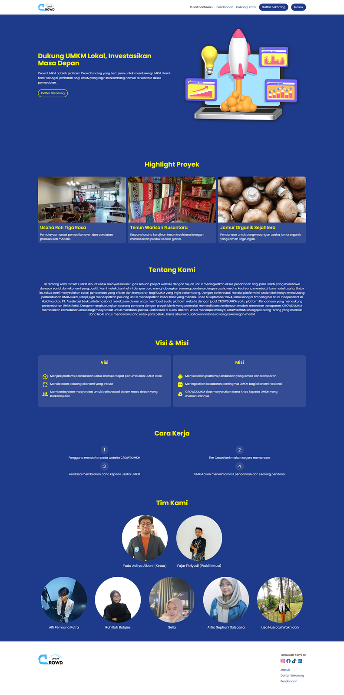
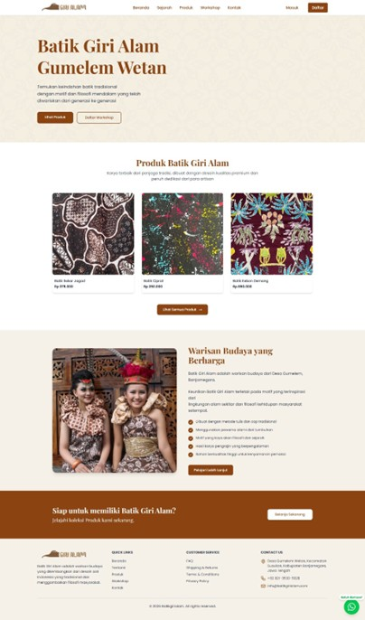
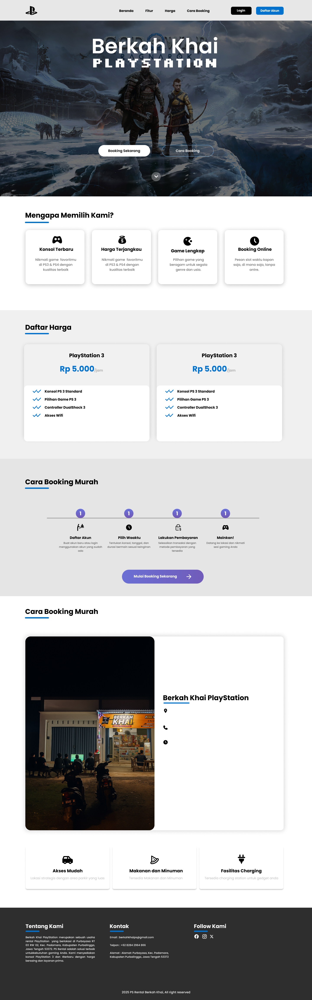
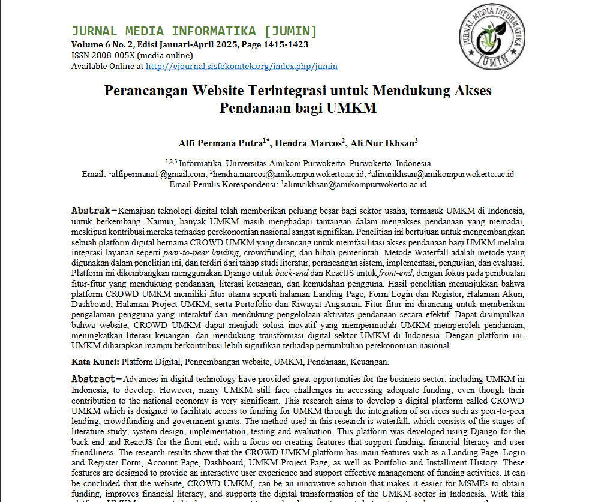

01
Technical Skills
- HTML
- CSS
- JavaScript
- Tailwind CSS
- React.js
- Laravel
- MySQL
- Basic Networking
- Microsoft Office (Word, Excel)
Lulusan S1 Informatika yang membangun aplikasi web, dari platform pendanaan UMKM hingga e-commerce dengan integrasi payment gateway. Terbuka untuk peluang sebagai Junior Web Developer.
Keahlian
Perjalanan
Saya lulusan S1 Informatika Universitas Amikom Purwokerto yang berminat pada pengembangan web. Melalui program MSIB, saya memimpin kelompok dalam merancang proyek berbasis website dan terus mengembangkan keterampilan melalui proyek.
Teknik Komputer dan Jaringan, 2019–2022.
S1 Informatika, 2022–2026. IPK 3,60 dari 4,00.
Platform and Web Developer for Financial/Banking Service, September–Desember 2024. Memimpin tim pada proyek CROWDUMKM.
Mengembangkan Batik Giri Alam dengan Laravel dan menerbitkan dua artikel jurnal pada 2025 dan 2026.
Proyek pilihan
03 / Proyek

Platform pendanaan UMKM

E-commerce & pemesanan workshop

Sistem pemesanan rental
Dalam angka
Publikasi
Perancangan Website Terintegrasi untuk Mendukung Akses Pendanaan bagi UMKM
Jurnal Media Informatika (JuMIn), 2025
Baca publikasi
Jurnal ilmiah